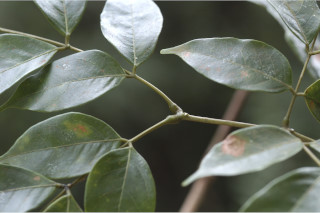
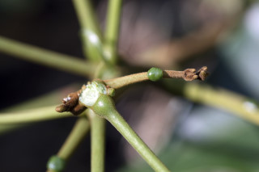
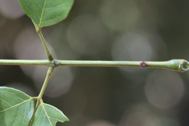
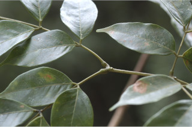
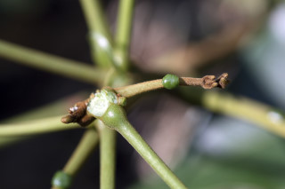
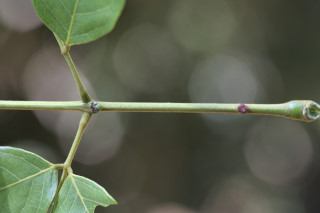

Medium sized trees up to 12 m tall.
12 ಮೀ. ಎತ್ತರದವರೆಗೆ ಬೆಳೆಯುವ ಮಧ್ಯಮ ಗಾತ್ರದ ಮರಗಳು.
Medium sized trees up to 12 m tall.
மிதமான உயரமுடைய மரமாக 12 மீ. உயரம் வரை வளரக்கூடியது.
Bark reddish-brown, prominently lenticellate; blaze reddish pink.
ತೊಗಟೆ ಕೆಂಪು ಮಿಶ್ರಿತ ಕಂದು ಬಣ್ಣ ಹೊಂದಿದ್ದು ಪ್ರಾಮುಖ್ಯವಾಗಿ ಕಾಣುವ ಸೂಕ್ಷ್ಮ ವಾಯುವಿನಿಮಯ ಬೆಂಡು ರಂಧ್ರಗಳನ್ನು ಹೊಂದಿರುತ್ತದೆ;ಕಚ್ಚು ಮಾಡಿದ ಜಾಗ ಕೆಂಪು ಮಿಶ್ರಿತ ನಸುಗೆಂಪು.
Bark reddish-brown, prominently lenticellate; blaze reddish pink.
மரத்தின் பட்டை சிவப்பு-ப்ரவுன் நிறமானது, தெளிவான பட்டைத்துளைகள் (லெண்டிசெல்லேட்) உடையது; உள்பட்டை சிவப்பு-பிங்க் நிறமானது.
Young branchlets terete, puberulent.
ಎಳೆಯ ಕಿರುಕೊಂಬೆಗಳು ದುಂಡಾಗಿದ್ದು ಸೂಕ್ಷ್ಮ ಮೃದು ತುಪ್ಪಳದಿಂದ ಕೂಡಿರುತ್ತವೆ.
Young branchlets terete, puberulent.
சிறியநுனிக்கிளைகள் குறுக்குவெட்டுத் தோற்றத்தில் வளையமானது, உரோமங்களுடையது.
Leaves compound, bipinnate, alternate, spiral; stipule caducous; rachis 10-11 cm long, pulvinate, round sessile gland along the upper side of the primary and in between the leaflets of secondary rachis, puberulent; petiolule 0.4-0.5 cm long; pinnae 1-2 pairs, opposite, lower pinnae shorter than terminal; leaflets 4-8, opposite, increasing in size towards apex, 4-14.5 x1.8-5.5 cm, usually narrow elliptic to ovate, caudate - acuminate with mucronate tip, base asymmetric or cuneate to acute, margin entire, chartaceous, puberulent at least when young; midrib raised above; secondary_nerves 8-14 pairs; tertiary_nerves weakly percurrent or broadly reticulate.
ಎಲೆಗಳು ಸಂಯುಕ್ತ, ದ್ವಿಗರಿ ಹಾಗೂ ಸಮ ಸಂಖ್ಯಾ ಗರಿ ರೂಪಿಗಳಾಗಿದ್ದು ಪರ್ಯಾಯ ಮತ್ತು ಸುತ್ತು ಜೋಡನಾ ವ್ಯವಸ್ಥೆಯಲ್ಲಿರುತ್ತವೆ ;ಕಾವಿನೆಲೆಗಳು ಅಸ್ಥಿರವಾಗಿರುತ್ತವೆ;ನಡುಕಾಂಡ 10 ರಿಂದ 11 ಸೆಂ.ಮೀ.ಉದ್ದವಿದ್ದು,ಉಬ್ಬಿದ ಎಲೆ ಬುಡವನ್ನು ಹೊಂದಿದ್ದು ಪ್ರಾಥಮಿಕ ನಡುಕಾಂಡದ ಮೇಲ್ಭಾಗದಲ್ಲಿ ಮತ್ತು ರಡನೇ ದರ್ಜೆಯ ನಡುಕಾಂಡದ ಕಿರುಎಲೆಗಳ ನಡುವೆ ದುಂಡಾದ, ತೊಟ್ಟುರಹಿತವಾದ ರಸಗ್ರಂಥಿಗಳ ಸಮೇತವಿದ್ದು ಸೂಕ್ಷ್ಮ ಮೃದು ತುಪ್ಪಳದಿಂದ ಕೂಡಿರುತ್ತವೆ;ಕಿರುಎಲೆಯ ತೊಟ್ಟುಗಳು 0.4 ರಿಂದ 0.5 ಸೆಂ.ಮೀ. ಉದ್ದವಿರುತ್ತವೆ; ಗರಿಗಳು 1 ರಿಂದ 2 ಜೋಡಿಗಳಿದ್ದು ,ತಳ ಭಾಗದ ಗರಿಗಳು ತುದಿಯಲ್ಲಿನ ಗರಿಗಳಿಗಿಂತ ಚಿಕ್ಕದಾಗಿರುತ್ತವೆ;ಕಿರು ಎಲೆಗಳು 4 ರಿಂದ 8 ಇರುತ್ತವೆ ಮತ್ತು ಅಭಿಮುಖಿಗಳಾಗಿರುತ್ತವೆ ಹಾಗೂ ಅಗ್ರದ ಕಡೆಗೆ ಹೋದಂತೆ ಗಾತ್ರ ಹೆಚ್ಚುತ್ತಾ ಹೋಗುತ್ತದೆ,ಕಿರುಎಲೆಗಳು 1 – 14.5 X 1.8 – 5.5 ಸೆಂ.ಮೀ. ಗಾತ್ರ ಹೊಂದಿದ್ದು ಸಾಮಾನ್ಯವಾಗಿ ಸಂಕುಚಿತ ಅಂಡವೃತ್ತದಿಂದ ಅಂಡದವರೆಗಿನ ಆಕಾರ, ಸೂಕ್ಷ್ಮ ಮೊನಚು ಮುಳ್ಳುಳ್ಳ ಬಾಲ ರೂಪಿ –ಕ್ರಮೇಣ ಚೂಪಾಗುವ ತುದಿ, ಅಸಮ್ಮಿತಿಯಾದ ಅಥವಾ ಬೆಣೆಯಾಕಾರದದಿಂದ ಚೂಪಾಗುವವರೆಗಿನ ಬುಡ,ನಯವಾದ ಅಂಚು ಕಾಗದವನ್ನೋಲುವ ಮೇಲ್ಮೈ, ಹೊಂದಿದ್ದು ಕನಿಷ್ಠ ಪಕ್ಷ ಎಳೆಯದಾದ ಕಿರುಎಲೆಗಳಾದರೂ ಸೂಕ್ಷ್ಮ ಮೃದುಗೂದಲುಗಳನ್ನು ಹೊಂದಿರುತ್ತವೆ; ಮಧ್ಯನಾಳ ಮೇಲ್ಭಾಗದಲ್ಲಿ ಮೇಲೆದ್ದಿರುತ್ತದೆ;ಎರಡನೇ ದರ್ಜೆಯ ನಾಳಗಳು 8 ರಿಂದ 14 ಜೋಡಿಗಳಿರುತ್ತವೆ;ಮೂರನೇ ದರ್ಜೆಯ ನಾಳಗಳು ಕೃಶವಾಗಿದ್ದು ಎಲೆ ದಿಂಡಿಗೆ ಅಡ್ಡವಾಗಿ ಕೂಡುವ ಅಥವಾ ವಿಶಾಲ ಜಾಲಬಂಧ ನಾಳವಿನ್ಯಾಸದಲ್ಲಿರುವ ಮಾದರಿಯಲ್ಲಿರುತ್ತವೆ.
Leaves compound, bipinnate, alternate, spiral; stipule caducous; rachis 10-11 cm long, pulvinate, round sessile gland along the upper side of the primary and in between the leaflets of secondary rachis, puberulent; petiolule 0.4-0.5 cm long; pinnae 1-2 pairs, opposite, lower pinnae shorter than terminal; leaflets 4-8, opposite, increasing in size towards apex, 4-14.5 x1.8-5.5 cm, usually narrow elliptic to ovate, caudate - acuminate with mucronate tip, base asymmetric or cuneate to acute, margin entire, chartaceous, puberulent at least when young; midrib raised above; secondary_nerves 8-14 pairs; tertiary_nerves weakly percurrent or broadly reticulate.
கூட்டிலை, இருமுறை கிளைத்த சிறகுவடிவக்கூட்டிலை (பைபின்னேட்), மாற்றுஅடுக்கமானவை, சுழல் போல் அமைந்தது; இலையடிச்செதில் எளிதில் உதிரக்கூடியவை ; மத்தியகாம்பு 10-11 செ.மீ. நீளமானது, பல்வினேட், முதற்காம்பு மற்றம் இரண்டாம் நிலை காம்புகளில் வட்டவடிவ காம்பற்ற சுரப்பிகள் மேற்புறத்தில் உடையது, உரோமங்களுடையது; சிற்றிலைக்காம்பு 0.4-0.5 செ.மீ. நீளமானது; பின்னே 1-2 ஜோடிகள், எதிரடுக்கமானவை, தளத்திலுள்ள பின்னே நுனியிலுள்ளவையை விட குட்டையானது ; சிற்றிலைகள் 4-8, எதிரடுக்கமானவை, நுனியிலுள்ள சிற்றிலைகள் தளத்திலுள்ளவையை விட பெரியது, 4-14.5 ´1.8-5.5 செ.மீ., குறுகிய நீள்வட்ட வடிவானது முதல் முட்டை வடிவானது, வால்-அதிக்கூரியதுடன் அதன் முனை மூயூக்கரனேட், அலகின் தளம் சமமற்றது அல்லது ஆப்பு வடிவானது முதல் கூரியது, அலகின் விளிம்பு முழுமையானது, சார்ட்டேசியஸ், இளம்பருவத்தில் உரோமங்களுடையது ; மையநரம்பு மேற்புறத்தில் அலகின் பரப்பைவிட உயர்ந்து இருக்கும்; இரண்டாம் நிலை நரம்புகள் 8-14 ஜோடிகள்; மூன்றாம் நிலை நரம்புகள் பெர்க்கரண்ட் அல்லது அகன்ற வலைப்பின்னல் போன்றவை.
Inflorescence globose heads, in terminal and axillary panicles; flowers white, sessile.
ಪುಷ್ಪಮಂಜರಿಗಳು ಗೋಳಾಕಾರ ಮಂಜರಿ ಮಾದರಿಯವುಗಳಾಗಿದ್ದು ತುದಿಯಲ್ಲಿನ ಮತ್ತು ಅಕ್ಷಾಕಂಕುಳಿನಲ್ಲಿರುವ ಪುನರಾವೃತ್ತಿಯಾಗಿ ಕವಲೊಡೆಯುವ ಮಧ್ಯಾಭಿಸರ ರೀತಿಯಲ್ಲಿರುತ್ತವೆ; ಹೂಗಳು ಬಿಳಿ ಬಣ್ಣ ಹೊಂದಿರುತ್ತವೆ.
Inflorescence globose heads, in terminal and axillary panicles; flowers white, sessile.
மஞ்சரி தலை வகை, கோளவடிவானது, மஞ்சரி தண்டின் நுனியில் மற்றும் இலைக்கோணங்களில் காணப்படும் பேனிக்கிள்; மலர்கள் வெள்ளை நிறமானது, காம்பற்றது.
Pods, 10 x 1.5-2 cm, twisted, strap shaped, red within; seeds 3-8, ovoid, smooth.
ಕಾಯಿಗಳು ಪಾಡ್ ಮಾದರಿಯವುಗಳಾಗಿದ್ದು 10 X 1.5 - 2 ಸೆಂ.ಮೀ. ಗಾತ್ರ ವಿದ್ದು ಸುರುಳಿಯಾಗಿರುತ್ತದೆ ಮತ್ತು ಪಟ್ಟಿಯ ಆಕಾರವನ್ನು ಹಾಗೂ ಕೆಂಪು ಬಣ್ಣದ ಒಳಭಾಗ ಹೊಂದಿರುತ್ತವೆ;ಬೀಜಗಳು 3 – 8, ಅಂಡಾಕಾರವಾಗಿದ್ದು ನಯವಾಗಿರುತ್ತವೆ.
Pods, 10 x 1.5-2 cm, twisted, strap shaped, red within; seeds 3-8, ovoid, smooth.
பாட் கனி (அவரைப்போன்றது), 10 x 1.5-2 செ.மீ., திருகியது, தட்டையானது, உள்பகுதி சிவப்பு நிறமானது; விதைகள் 3-8, முட்டை வடிவானது, வழவழப்பானது.
 




